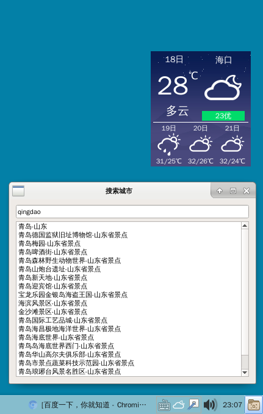

桌面天气 v1.0 18.09.22_12:58:2918.09.22 经历两年多来间歇性努力之后，天气终于迈入V1.0正式版了（掌声）。 更新： 1.全部使用中国天气的网页api，不再从网页获取数据了。 2.增加了湿度，风向风速，调整界面布局。 当然这个1.0版还是比较水的。因为这种天气小程序应该直接画出来就够了，但是我全部使用了控件。 好的，估计没啥事又不会更新的了。
================== 18.09.18 去除鸡肋的置顶穿透，增加背景图开关，其他微调

======== 更新： 1.自动获取当前天气的背景图片。 2.稍微调整了一下界面。 3.增加离线搜索城市，用于在线搜索失败时。 ========= 之前的版本存在慢慢的内存泄露的问题，经过这次不断修改！！终于！！好像还是会泄露.....果断甩锅，不管了。 功能依旧： 1.可搜索城市，国外的没数据的，貌似只能国内。 2.可调文字和图标颜色，还有透明度。 3.可以设置置顶穿透。
【注意】 该软件是在deepin-V15下写的，有可能在其他桌面环境下无法运行。我记得我另一个软件里的使对话框居中的代码在xfce4里是会出问题的，这个软件也有这句代码的。所以，只保证在DDE里运行没事。 ----------------------------------------------------------------- 项目地址： https://github.com/noahsai/tianqi
------------------------------------------------------------------- 我的编译方法： 安装好qt5.5.1 用qtcreator打开项目，系统要安装 libqt5x11extras5-dev 然后选择release版本编译。 编译出来的tianqi即可运行。 |